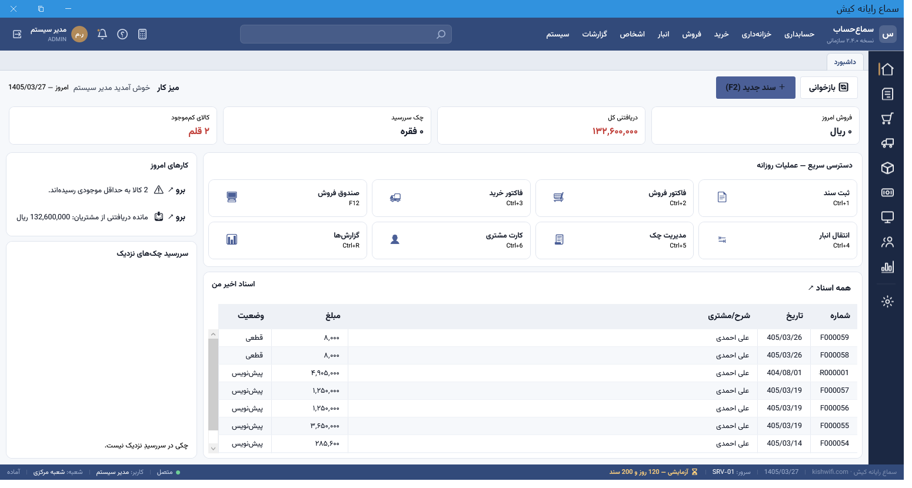
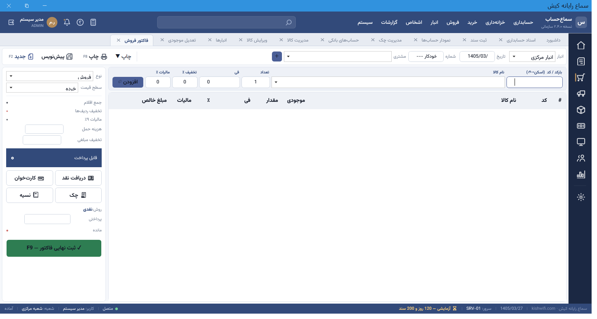
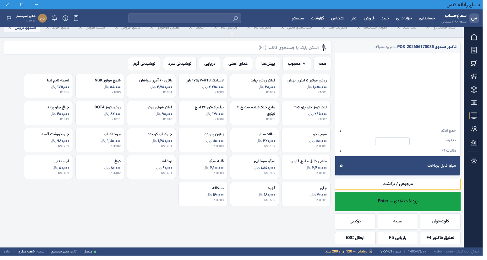
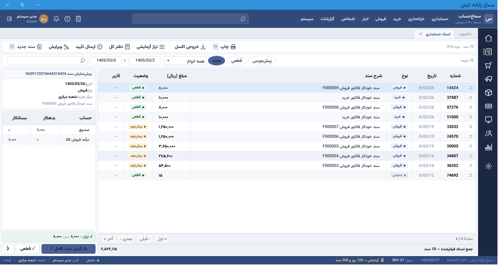
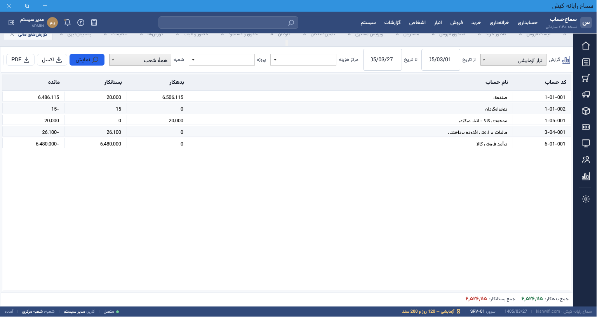
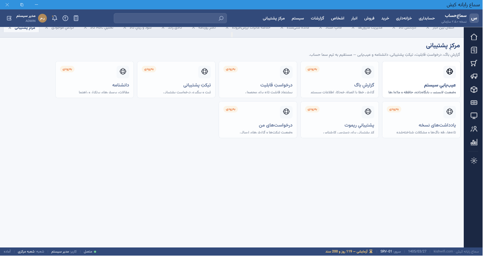

حسابداری، خزانهداری، فروش و خرید، انبار، صندوقِ فروشگاهی و گزارشهای مدیریتی — یکجا، فارسی و راستبهچپ با تقویمِ شمسی.

از ثبتِ سند تا گزارشهای مدیریتی و صندوقِ فروشگاهی — همه در یک بستر یکپارچه.
سند، دفترِ کل/معین، تراز، سود و زیان، ترازنامه، سال مالی و بستنِ دوره.
چک (چرخهٔ وصول/برگشت)، صندوق/بانک، مغایرتگیری، دریافتنی/پرداختنی.
فاکتور، مرجوعی، لیستقیمت، تخفیفِ پلکانی، سقفِ اعتبارِ مشتری.
کاردکس، انتقال بینانبار، انبارگردانی، بچ/سریال/انقضا، FIFO و میانگین موزون.
POSِ لمسی، شیفت/Z-X، میز/گارسون/آشپزخانه، چاپِ حرارتی.
ماندهٔ سنیشده، مالیات ارزشافزوده، سود کالا، ABC، گردشِ موجودی — با اکسل/PDF.
جداسازیِ دادهٔ شعبه، نقش/مجوزِ دانهریز (RBAC)، حسابرسی.
گزارشِ باگ، تیکت، دانشنامه، عیبیابی و پشتیبانیِ ریموت — درونِ نرمافزار.
تصاویرِ واقعی از بخشهای مختلفِ سما حساب — برای بزرگنمایی روی هر تصویر کلیک کنید.





نصابِ خودکفا (شاملِ همهٔ پیشنیازها). نصب در چند دقیقه، روی ویندوز ۱۰ و ۱۱.
⬇️ دانلودِ سما حساب 2.5.0